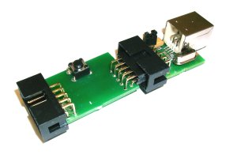

Status: in Arbeit
?ber eine leicht erweiterte Hardware k?nnen Targets ohne PC programmiert werden. Das Programm und entsprechende Einstellungen werden dazu in einem EEPROM gespeichert. Mit einem Taster wird der Programmiervorgang gestartet.
Hardware
